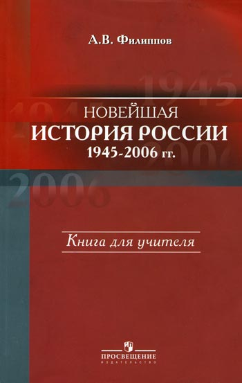
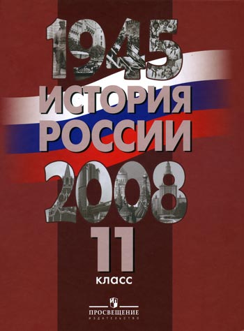
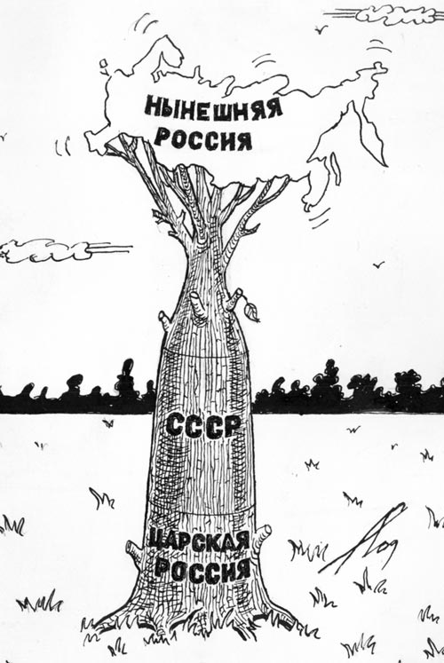

После долгого периода субъективизма и произвола приходит, кажется, более объективный и трезвый подход к созданию учебников по истории России. На эту волну оптимизма настраивает только что вышедший в издательстве «Просвещение» учебник истории для 11 класса «История России. 1945–2008» (Под редакцией А.А.Данилова, А.И.Уткина и А.В.Филиппова). Многозначительно то обстоятельство, что он издан в связке с появившейся раньше, в 2007 году, книгой для учителя «Новейшая история России1945–2006» А.В.Филиппова. Оба издания имеют новаторский характер как по внутреннему содержанию, так и по форме, включающей большие выдержки из исторических документов, воспоминаний современников, выделенные специальными шрифтами и подчеркиваниями. По сути дела, обе работы — это попытка дать целостное объективное освещение истории современности, правдиво рассказать о делах старших поколений — наших современников. Эти современники еще живы, многие из них участвовали во всех перипетиях послевоенной истории, хорошо помнят и события, и людей той поры. Поэтому писать такую историю весьма не просто. Авторы рискуют попасть под огонь критики не с одной, так с другой стороны. Однако они твердо заявляют о приверженности принципам научности (см. А.В.Филиппов, стр. 5).
Когда на учителей, школьников и студентов 1990-х годов свалилась куча разных «учебников истории» России, грубо искажающих историю России и СССР, были в шоке не только учителя, но и патриотическая общественность. Эти «творения», видимо, по замыслу авторов, должны были вызывать у молодежи вопросы: в какой же ужасной стране мы живем, что же за темные и мелкие люди населяют эту страну, могут ли они жить самостоятельно, способны ли они жить в условиях демократии? Ответ, часто, был предопределен: Россия якобы неспособна к демократии, не способна избрать разумных правителей, она сбилась с пути цивилизации, надо её вернуть обратно. Только теперь большинству становится ясно, что именно с помощью этих писателей, историков и политиков капитал разрушал нашу Родину. Эти писатели, историки и журналисты и создавали её чудовищно карикатурный образ. На многих людей этот образ подействовал панически: от расстройства одни опустили руки, другие уехали за рубеж, третьи бросились спасаться по одиночке.
 И вот теперь обнажилось противоречие: как же так, при таких вроде бы хороших, демократических, гуманных, добрых правителях, писателях и политиках разрушена не только экономика страны, но и сама страна — великий Советский Союз. И спросить как будто не с кого, разве что с Горбачева. Но это противоречие периода 1985–2006 гг. дает неожиданную рефлексию на начало рассматриваемой эпохи, на 1945–1956 годы. Получилось: в суровые времена Сталина страна и люди мощно развивались, а в расслабленные годы Горбачева и Ельцина страна развалена, экономика разрушена, народ обнищал и вымирал сотнями тысяч. Ведь получилось, что при Сталине, как бы его ни обливали грязью пятьдесят с лишним лет, защитили страну от страшнейшего нашествия врагов, восстановили разрушенную войной экономику в кратчайшие сроки, обеспечили ядерные гарантии от военного давления, направили ядерную энергию на достижение мирных целей, подготовили космическую эру. Разве могло какое-либо нерадивое правительство создать все это? Разве могло бы какое-то правительство свершить все это без умного, деятельного руководства со стороны партии и лидера? Ответ ясен каждому честному, здравомыслящему человеку. Он ясен и бесчестному, но куда деваться, если политическая позиция обязывает и деньги платят только за «чернуху». А между этими противоречиями и вместе с ними прошла целая большая эпоха. В ней прожили прадеды, деды, отцы и теперь живут их сыновья и внуки.
Авторы рассматриваемых произведений, прожившие в эту эпоху, видимо хорошо осознали, прочувствовали, продумали первое противоречие и начало эпохи. Ещё бы! Ведь им, наряду с другими учителями и преподавателями, пришлось много раз выкручиваться перед школьниками и студентами, объясняя это противоречие. Ведь школьники и студенты имели, в большинстве, в своем сознании народное понимание и народную память о вождях той эпохи. И эта память принципиально расходилась с трактовками учебников. Сегодня, даже после пятидесяти лет беспрерывных поношений во всех средствах массовой информации, Сталин занял, как ни старались противодействовать этому устроители опроса, третье место среди самых популярных вождей, ученых и поэтов России. Даже если бы он занял последнее — двенадцатое — место, это было бы великим триумфом оболганного вождя. Причем неоднократно в течение опроса Сталин выходил на первое место.
А где же оказались герои «перестройки» и «демократических реформ»? Они оказались в корзине для мусора, как непотребные разорители России. Их соратники навязывают молодежи представление, что, мол, СССР развалился, сам собой разрушился. Однако, теперь-то уж ясно, что под знаменем антисталинизма все эти пятьдесят лет собирались разрушители Отечества, не брезговавшие и подачками из-за бугра. Противоречие обнажилось, а его стороны встали явно друг против друга. Становится ясно, что общество не развивается само по себе и не разрушается само по себе, что есть устроители и есть разрушители, есть герои и есть предатели. Причем оказалось, что разрушители иногда побеждают.
Вот это осознание и переворот в сознании широких масс людей и отражает появление попыток объективно оценить и изложить процессы современной истории в учебниках для старших классов. Поэтому авторы обоснованно отметают нелепые обвинения руководства СССР в «тоталитаризме». Первая глава и книги, и учебника показывают эффективность реагирования сталинского правительства на внутреннее экономическое и политическое положение страны и внешнеполитические угрозы. Сталин не пропустил антисоветской и антисоюзнической речи У.Черчиля в Фултоне, которая опускала железный занавес между Европой и СССР. А.В.Филиппов правильно сделал, что опубликовал документы по этому вопросу, чтобы каждый школьник, да и все интересующиеся, могли узнать истину и провокационную роль речи английского премьера.
Такое начало книги позволяет задать во многом правильный тон для оценки событий последовавшей эпохи. Становятся понятными гигантские затраты средств и человеческой энергии на научно-технический прогресс, на образование и культуру, на развитие человека. Понятно, что эти ресурсы во многом отрывались от сельского хозяйства, от живущего в деревнях крестьянства. Во всяком случае эти средства не разворовывались и не вывозились за рубеж, а шли на развитие страны, в конечном счете и на крестьян тоже.
Однако А.В.Филиппов не всегда последователен. С одной стороны, он заявляет: «Советский Союз не был демократией», а с другой говорит: «Он был ориентиром и примером лучшего, справедливого общества для многих миллионов людей во всем мире» (См. там же, стр. 6). Спрашивается: как может быть «недемократическое» общество лучшим и справедливым для других, если само оно не таково? А если государство не было демократическим, то каким оно было — монархическим, олигархическим, аристократическим? Такая непоследовательность не помогает решать поставленную благородную задачу.
В силу такой непоследовательности, чем ближе продвигается автор к концу исторического периода, тем в большей степени уходит он от рассмотрения объективного исторического процесса к рассмотрению исторических персоналий. Причем, чем ближе к финалу, тем сдержанней критика и благожелательней тон. Конечно, В.Путин пытается поднять Россию из руин, он действующий персонаж. В отношении его в курсе школьной истории уместна только важнейшая фактология. И ясна разрушительная сущность политики его предшественников. Уже очевидно, что прикрытая фразами о перестройке и реформах политика Горбачева и Ельцина оказалась губительной для великой державы. И если не показать их антинародного антисоциалистического курса, поддержанного псевдодемократическими движениями, то останется непонятным — почему мы оказались в полуразрушенной стране с вымирающим населением.
Конечно, здесь есть некоторые объективные обстоятельства, затрудняющие пока попытки глубоко познать и раскрыть это противоречие: пока еще эта эпоха не изучена наукой, не опубликованы многие важные материалы, не улеглись страсти. Тем не менее, здесь важна позиция исследователя. Если есть (и было) противоречие, то у него было две стороны. Одна сторона подробно и ярко освещалась, другую сторону старались и могли, в силу обстоятельств, оставлять в тени. Но она была. Многие рядовые граждане и коммунисты в СССР боролись против разрушительной политики горбачевщины-ельцинизма. Многое было сделано, в том числе созданы общесоюзные организации, представившие свои программы выхода из кризиса, проводившие агитацию в рабочих клубах, в газетах, на телевидении. Особенно сильным был Объединенный фронт трудящихся России. Он выступал за единство России в составе СССР, выдвинул и добился регистрации генерала А.М.Макашова и профессора А.А.Сергеева кандидатами на посты президента и вице-президента России. Коммунисты, входившие во Фронт трудящихся, организовали Движение Коммунистической инициативы, проведшее три съезда, под воздействием которых была создана Компартия РСФСР. Летом 1991 года Движением Коммунистической инициативы был поставлен вопрос об исключении из партии проводящей антинародную политику антикоммунистической фракции Горбачева. Опасаясь такого бесславного конца, Горбачев поспешил инициировать разрушение партии и государства.
Поэтому неверно утверждение, что СССР никто не защищал. Многие защищали. Но силы оказались неравными. Практически все информационные и материальные ресурсы оказались у предательского руководства партии. На развал КПСС и СССР работали иностранные идеологические ведомства и разведки, крупнейшие буржуазные государства, в первую очередь — США.
Когда историки рассмотрят эту борьбу во всей её конкретной противоречивости, тогда будет написана лучше отражающая действительность история. А школьники получат не только правдивый, но и вполне истинный учебник истории.
Рассмотренные работы — шаг в нужном направлении. Прочитав рассматриваемые книги, молодой человек будет гордиться историей своей великой страны, и в этом — большая заслуга авторов перед обществом и наукой. Следует рекомендовать изучать новейшую историю России по этому учебнику и книге для учителей.
А. Казённов, доктор философских наук,
руководитель Ленинградского отделения
Фонда Рабочей Академии